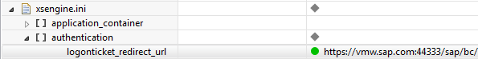

Configure SSO with SAP Logon Tickets for SAP HANA XS Applications
SAP HANA applications can use single sign-on (SSO) authentication with SAP logon tickets to confirm the logon credentials of the user calling an application service.
Prerequisites
- You have administrator access to the SAP HANA system hosting the
applications to which you want to enable access with SAP logon tickets.Note To maintain security and authentication settings for SAP HANA XS applications, the administrator user needs the privileges granted by the SAP HANA XS role RuntimeConfAdministrator.
- The CommonCryptoLib library libsapcrypto.so is installed and available.
- A certificate collection with the purpose SAP LOGON is available. For more information, see Managing Client Certificates in the SAP HANA Database.
Context
To enable SAP HANA applications to use single sign-on (SSO) authentication with SAP logon tickets to confirm the logon credentials of a user requesting an application service, you must ensure that an SAP server is available that can issue SAP logon tickets. In addition, you need to add the server certificate of the ticket-issuing system to the SAP HANA trust store for authentication using logon tickets.
Procedure
-
In SAP HANA, configure the details of the server that issues SAP logon
tickets.
This step is optional but ensures that an SAP logon ticket can always be obtained in those cases where no SAP logon ticket is immediately available for the user trying to log on.

-
In the Configuration tab, expand (or add) the
section
 xsengine.ini
xsengine.ini  authentication
authentication  .
.
-
In the Configuration tab, expand (or add) the
section